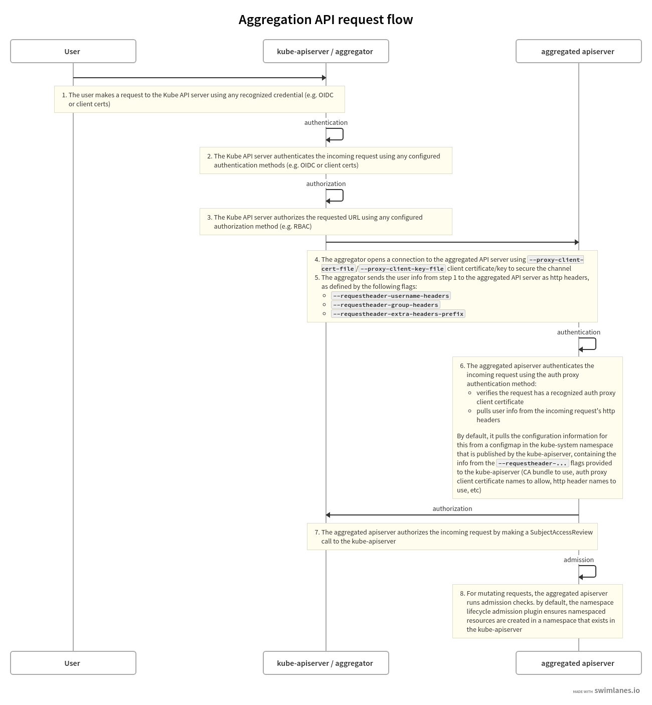

Configuring the aggregation layer allows the Kubernetes apiserver to be extended with additional APIs, which are not part of the core Kubernetes APIs.
Before you begin
You need to have a Kubernetes cluster, and the kubectl command-line tool must be configured to communicate with your cluster. It is recommended to run this tutorial on a cluster with at least two nodes that are not acting as control plane hosts. If you do not already have a cluster, you can create one by using minikube or you can use one of these Kubernetes playgrounds:
- iximiuz Labs
- Killercoda
- KodeKloud To
check the version, enter
kubectl version.
Note:
There are a few setup requirements for getting the aggregation layer working in your environment to support mutual TLS auth between the proxy and extension apiservers. Kubernetes and the kube-apiserver have multiple CAs, so make sure that the proxy is signed by the aggregation layer CA and not by something else, like the Kubernetes general CA.
Caution:
Reusing the same CA for different client types can negatively impact the cluster's ability to function. For more information, see CA Reusage and Conflicts.
Authentication Flow
Unlike Custom Resource Definitions (CRDs), the Aggregation API involves another server - your Extension apiserver - in addition to the standard Kubernetes apiserver. The Kubernetes apiserver will need to communicate with your extension apiserver, and your extension apiserver will need to communicate with the Kubernetes apiserver. In order for this communication to be secured, the Kubernetes apiserver uses x509 certificates to authenticate itself to the extension apiserver.
This section describes how the authentication and authorization flows work, and how to configure them.
The high-level flow is as follows:
- Kubernetes apiserver: authenticate the requesting user and authorize their rights to the requested API path.
- Kubernetes apiserver: proxy the request to the extension apiserver
- Extension apiserver: authenticate the request from the Kubernetes apiserver
- Extension apiserver: authorize the request from the original user
- Extension apiserver: execute
The rest of this section describes these steps in detail.
The flow can be seen in the following diagram.

The source for the above swimlanes can be found in the source of this document.
Kubernetes Apiserver Authentication and Authorization
A request to an API path that is served by an extension apiserver begins the same way as all API requests: communication to the Kubernetes apiserver. This path already has been registered with the Kubernetes apiserver by the extension apiserver.
The user communicates with the Kubernetes apiserver, requesting access to the path. The Kubernetes apiserver uses standard authentication and authorization configured with the Kubernetes apiserver to authenticate the user and authorize access to the specific path.
For an overview of authenticating to a Kubernetes cluster, see "Authenticating to a Cluster". For an overview of authorization of access to Kubernetes cluster resources, see "Authorization Overview".
Everything to this point has been standard Kubernetes API requests, authentication and authorization.
The Kubernetes apiserver now is prepared to send the request to the extension apiserver.
Kubernetes Apiserver Proxies the Request
The Kubernetes apiserver now will send, or proxy, the request to the extension apiserver that registered to handle the request. In order to do so, it needs to know several things:
- How should the Kubernetes apiserver authenticate to the extension apiserver, informing the extension apiserver that the request, which comes over the network, is coming from a valid Kubernetes apiserver?
- How should the Kubernetes apiserver inform the extension apiserver of the username and group for which the original request was authenticated?
In order to provide for these two, you must configure the Kubernetes apiserver using several flags.
Kubernetes Apiserver Client Authentication
The Kubernetes apiserver connects to the extension apiserver over TLS, authenticating itself using a client certificate. You must provide the following to the Kubernetes apiserver upon startup, using the provided flags:
- private key file via
--proxy-client-key-file - signed client certificate file via
--proxy-client-cert-file - certificate of the CA that signed the client certificate file via
--requestheader-client-ca-file - valid Common Name values (CNs) in the signed client certificate via
--requestheader-allowed-names
The Kubernetes apiserver will use the files indicated by
--proxy-client-*-file to authenticate to the extension
apiserver. In order for the request to be considered valid by a
compliant extension apiserver, the following conditions must be met:
- The connection must be made using a client certificate that is
signed by the CA whose certificate is in
--requestheader-client-ca-file. - The connection must be made using a client certificate whose CN is
one of those listed in
--requestheader-allowed-names.
Note:
You can set this option to blank as
--requestheader-allowed-names="". This will indicate to an
extension apiserver that any CN is acceptable.
When started with these options, the Kubernetes apiserver will:
- Use them to authenticate to the extension apiserver.
- Create a configmap in the
kube-systemnamespace calledextension-apiserver-authentication, in which it will place the CA certificate and the allowed CNs. These in turn can be retrieved by extension apiservers to validate requests.
Note that the same client certificate is used by the Kubernetes apiserver to authenticate against all extension apiservers. It does not create a client certificate per extension apiserver, but rather a single one to authenticate as the Kubernetes apiserver. This same one is reused for all extension apiserver requests.
Original Request Username and Group
When the Kubernetes apiserver proxies the request to the extension apiserver, it informs the extension apiserver of the username and group with which the original request successfully authenticated. It provides these in http headers of its proxied request. You must inform the Kubernetes apiserver of the names of the headers to be used.
- the header in which to store the username via
--requestheader-username-headers - the header in which to store the group via
--requestheader-group-headers - the prefix to append to all extra headers via
--requestheader-extra-headers-prefix
These header names are also placed in the
extension-apiserver-authentication configmap, so they can
be retrieved and used by extension apiservers.
Extension Apiserver Authenticates the Request
The extension apiserver, upon receiving a proxied request from the Kubernetes apiserver, must validate that the request actually did come from a valid authenticating proxy, which role the Kubernetes apiserver is fulfilling. The extension apiserver validates it via:
- Retrieve the following from the configmap in
kube-system, as described above:- Client CA certificate
- List of allowed names (CNs)
- Header names for username, group and extra info
- Check that the TLS connection was authenticated using a client
certificate which:
- Was signed by the CA whose certificate matches the retrieved CA certificate.
- Has a CN in the list of allowed CNs, unless the list is blank, in which case all CNs are allowed.
- Extract the username and group from the appropriate headers
If the above passes, then the request is a valid proxied request from a legitimate authenticating proxy, in this case the Kubernetes apiserver.
Note that it is the responsibility of the extension apiserver
implementation to provide the above. Many do it by default, leveraging
the k8s.io/apiserver/ package. Others may provide options
to override it using command-line options.
In order to have permission to retrieve the configmap, an extension
apiserver requires the appropriate role. There is a default role named
extension-apiserver-authentication-reader in the
kube-system namespace which can be assigned.
Extension Apiserver Authorizes the Request
The extension apiserver now can validate that the user/group retrieved from the headers are authorized to execute the given request. It does so by sending a standard SubjectAccessReview request to the Kubernetes apiserver.
In order for the extension apiserver to be authorized itself to
submit the SubjectAccessReview request to the Kubernetes
apiserver, it needs the correct permissions. Kubernetes includes a
default ClusterRole named
system:auth-delegator that has the appropriate permissions.
It can be granted to the extension apiserver's service account.
Extension Apiserver Executes
If the SubjectAccessReview passes, the extension
apiserver executes the request.
Enable Kubernetes Apiserver flags
Enable the aggregation layer via the following
kube-apiserver flags. They may have already been taken care
of by your provider.
--requestheader-client-ca-file=<path to aggregator CA cert>
--requestheader-allowed-names=front-proxy-client
--requestheader-extra-headers-prefix=X-Remote-Extra-
--requestheader-group-headers=X-Remote-Group
--requestheader-username-headers=X-Remote-User
--proxy-client-cert-file=<path to aggregator proxy cert>
--proxy-client-key-file=<path to aggregator proxy key>CA Reusage and Conflicts
The Kubernetes apiserver has two client CA options:
--client-ca-file--requestheader-client-ca-file
Each of these functions independently and can conflict with each other, if not used correctly.
--client-ca-file: When a request arrives to the Kubernetes apiserver, if this option is enabled, the Kubernetes apiserver checks the certificate of the request. If it is signed by one of the CA certificates in the file referenced by--client-ca-file, then the request is treated as a legitimate request, and the user is the value of the common nameCN=, while the group is the organizationO=. See the documentation on TLS authentication.--requestheader-client-ca-file: When a request arrives to the Kubernetes apiserver, if this option is enabled, the Kubernetes apiserver checks the certificate of the request. If it is signed by one of the CA certificates in the file reference by--requestheader-client-ca-file, then the request is treated as a potentially legitimate request. The Kubernetes apiserver then checks if the common nameCN=is one of the names in the list provided by--requestheader-allowed-names. If the name is allowed, the request is approved; if it is not, the request is not.
If both --client-ca-file and
--requestheader-client-ca-file are provided, then the
request first checks the --requestheader-client-ca-file CA
and then the --client-ca-file. Normally, different CAs,
either root CAs or intermediate CAs, are used for each of these options;
regular client requests match against --client-ca-file,
while aggregation requests match against
--requestheader-client-ca-file. However, if both use the
same CA, then client requests that normally would pass via
--client-ca-file will fail, because the CA will match the
CA in --requestheader-client-ca-file, but the common name
CN= will not match one of the acceptable
common names in --requestheader-allowed-names. This can
cause your kubelets and other control plane components, as well as
end-users, to be unable to authenticate to the Kubernetes apiserver.
For this reason, use different CA certs for the
--client-ca-file option - to authorize control plane
components and end-users - and the
--requestheader-client-ca-file option - to authorize
aggregation apiserver requests.
Warning:
Do not reuse a CA that is used in a different context unless you understand the risks and the mechanisms to protect the CA's usage.
If you are not running kube-proxy on a host running the API server,
then you must make sure that the system is enabled with the following
kube-apiserver flag:
--enable-aggregator-routing=trueRegister APIService objects
You can dynamically configure what client requests are proxied to extension apiserver. The following is an example registration:
apiVersion: apiregistration.k8s.io/v1
kind: APIService
metadata:
name: <name of the registration object>
spec:
group: <API group name this extension apiserver hosts>
version: <API version this extension apiserver hosts>
groupPriorityMinimum: <priority this APIService for this group, see API documentation>
versionPriority: <prioritizes ordering of this version within a group, see API documentation>
service:
namespace: <namespace of the extension apiserver service>
name: <name of the extension apiserver service>
caBundle: <pem encoded ca cert that signs the server cert used by the webhook>The name of an APIService object must be a valid path segment name.
Contacting the extension apiserver
Once the Kubernetes apiserver has determined a request should be sent to an extension apiserver, it needs to know how to contact it.
The service stanza is a reference to the service for an
extension apiserver. The service namespace and name are required. The
port is optional and defaults to 443.
Here is an example of an extension apiserver that is configured to be
called on port "1234", and to verify the TLS connection against the
ServerName my-service-name.my-service-namespace.svc using a
custom CA bundle.
apiVersion: apiregistration.k8s.io/v1
kind: APIService
...
spec:
...
service:
namespace: my-service-namespace
name: my-service-name
port: 1234
caBundle: "Ci0tLS0tQk...<base64-encoded PEM bundle>...tLS0K"
...What's next
- Set up an extension api-server to work with the aggregation layer.
- For a high level overview, see Extending the Kubernetes API with the aggregation layer.
- Learn how to Extend the Kubernetes API Using Custom Resource Definitions.